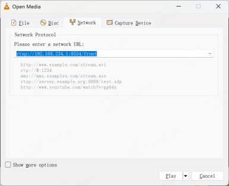
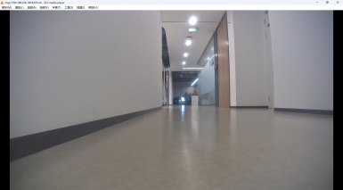

4.1 Video Stream Data
Video streams from the front and rear wide‑angle cameras are pushed via GStreamer to the following URLs:
Front Camera: rtsp://192.168.234.1:8554/front
Rear Camera: rtsp://192.168.234.1:8554/back
By default, the live video feed is pulled and displayed on the remote-controller. The streams can also be previewed and accessed using VLC or ffplay. Examples:
case1:On a Windows PC connected to the robot’s Wi‑Fi, use VLC to view the video stream:
step1:Open VLC, click “Media → Open Network Stream”

step2:Enter the stream URL, e.g.,
rtsp://192.168.234.1:8554/front

step3:Preview the video

case2:On an Ubuntu PC connected to the robot’s Wi‑Fi, use the following commands in the terminal to retrieve the video stream:
ffplay rtsp://192.168.234.1:8554/front
ffplay rtsp://192.168.234.1:8554/back
Note: For low‑latency video stream retrieval, use the following method:
gst-launch-1.0 rtspsrc location=rtsp://192.168.234.1:8554/front latency=0 ! 1rtph264depay ! h264parse ! avdec_h264 ! videoconvert ! videoscale ! video/x-raw,width=1280,height=720 ! autovideosink